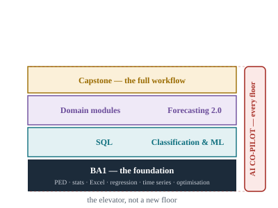
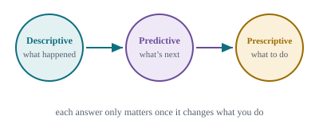
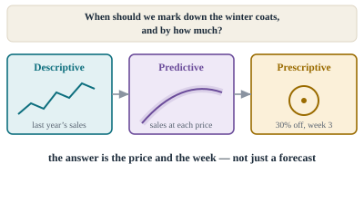
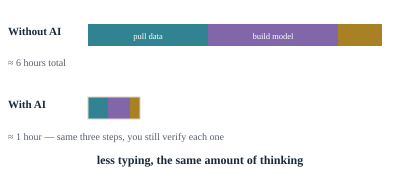
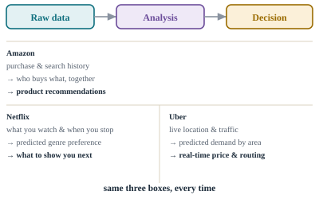
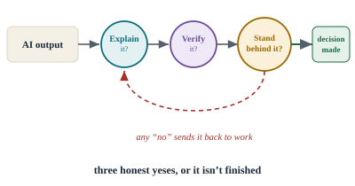
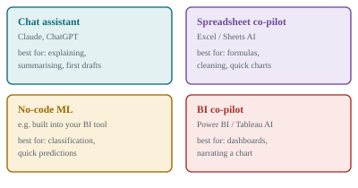
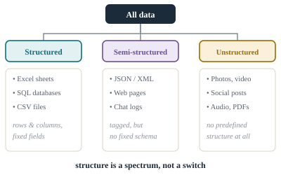
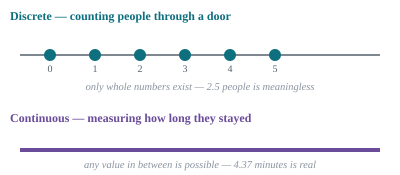
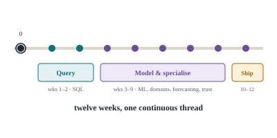

Introduction toBusiness Analytics
The questions every analysis is really trying to answer — and how an AI co-pilot changes how fast you can answer them, without changing whose judgement it is.
مقدمة فيتحليلات الأعمال
الأسئلة التي يحاول كل تحليل الإجابة عنها فعليًا — وكيف يغيّر مساعد الذكاء الاصطناعي سرعة إجابتك عليها، دون أن يغيّر صاحب القرار.
مقدمهای برتحلیل کسبوکار
سؤالاتی که هر تحلیلی واقعاً تلاش میکند به آنها پاسخ دهد — و اینکه چگونه یک دستیار هوش مصنوعی سرعت پاسخگویی تو را تغییر میدهد، بدون آنکه تصمیمگیرنده را تغییر دهد.
Welcome
Same fundamentals. A faster set of hands.
ترحيب
نفس الأساسيات. أيدٍ أسرع.
خوشآمدگویی
همان مبانی. دستهایی سریعتر.
- Explain how BA2 builds on BA1 rather than replacing it
- Describe where AI fits into the course as a whole
- توضيح كيف يُبنى BA2 فوق BA1 لا كبديل له
- وصف موقع الذكاء الاصطناعي ضمن المقرر ككل
- توضیح دهی BA2 چگونه بر پایه BA1 ساخته میشود، نه اینکه جایگزین آن باشد
- جایگاه هوش مصنوعی را در کل این دوره توصیف کنی
If you've taken BA1, nothing you learned there stops mattering. Reading a distribution, cleaning a dataset, fitting a regression line — that's still exactly how this course works. What's new sits on top of it, not instead of it.
إن كنت قد أتممت BA1، فكل ما تعلمته هناك ما زال مهمًا. قراءة التوزيع، تنظيف البيانات، ملاءمة خط الانحدار — هذا بالضبط ما زال أساس هذا المقرر. الجديد يُبنى فوق ذلك، لا بدلاً منه.
اگر BA1 را گذراندهای، هیچچیز از آنچه یاد گرفتهای اهمیتش را از دست نمیدهد. خواندن یک توزیع، پاکسازی یک مجموعه داده، برازش یک خط رگرسیون — همچنان دقیقاً همانطوری است که این دوره کار میکند. آنچه جدید است روی همین پایه ساخته میشود، نه بهجای آن.

Think of AI the way you'd think of a calculator. It multiplies two twelve-digit numbers instantly — but has no idea whether multiplying them was the right move for your problem. That decision was always yours.
فكّر في الذكاء الاصطناعي كما تفكر في الآلة الحاسبة. إنها تضرب رقمين من اثني عشر خانة فورًا — لكنها لا تعرف ما إذا كان ضربهما هو الخطوة الصحيحة لمشكلتك. ذلك القرار كان دائمًا قرارك أنت.
به هوش مصنوعی مثل یک ماشینحساب فکر کن. دو عدد دوازدهرقمی را فوراً ضرب میکند — اما هیچ ایدهای ندارد که آیا ضربکردن آنها اصلاً حرکت درستی برای مسئله تو بوده یا نه. آن تصمیم همیشه با خودت بوده است.
- BA1 skills (PED, stats, Excel, regression) stay fully in use throughout BA2.
- BA2 adds four new floors: SQL, classification/ML, domain modules, and Forecasting 2.0, plus a capstone.
- AI runs through every floor as a co-pilot — it isn't a separate topic of its own.
- مهارات BA1 (PED، الإحصاء، Excel، الانحدار) تبقى مستخدمة بالكامل طوال BA2.
- يضيف BA2 أربعة طوابق جديدة: SQL، التصنيف والتعلم الآلي، وحدات تخصّصية، و"التنبؤ 2.0"، إضافة إلى مشروع ختامي.
- الذكاء الاصطناعي يمر عبر كل طابق كمساعد — وليس موضوعًا مستقلاً بذاته.
- مهارتهای BA1 (چرخه PED، آمار، اکسل، رگرسیون) در سراسر BA2 کاملاً مورد استفاده باقی میمانند.
- BA2 چهار طبقه جدید اضافه میکند: SQL، طبقهبندی/یادگیری ماشین، ماژولهای تخصصی، و «پیشبینی ۲.۰»، بهعلاوه یک پروژه پایانی.
- هوش مصنوعی مانند یک دستیار از میان هر طبقه عبور میکند — موضوعی جداگانه برای خودش نیست.
What is business analytics?
One definition, worth knowing properly.
ما هي تحليلات الأعمال؟
تعريف واحد يستحق أن تعرفه جيدًا.
تحلیل کسبوکار چیست؟
یک تعریف، که ارزش دارد آن را درست بدانی.
- State the working definition of business analytics from memory
- Explain why the definition ends on "decisions," not "data"
- ذكر التعريف العملي لتحليلات الأعمال من الذاكرة
- توضيح سبب انتهاء التعريف بكلمة "قرارات" لا "بيانات"
- تعریف عملیاتی تحلیل کسبوکار را از حفظ بیان کنی
- توضیح دهی چرا این تعریف به «تصمیمها» ختم میشود، نه «دادهها»
The use of data, statistical analysis, and mathematical or computer-based models to help managers gain improved insight about their business operations and make better, fact-based decisions.Working definition
Notice the sentence ends on decisions, not on data. Everything in this course — AI-assisted or not — is in service of that last word.
استخدام البيانات والتحليل الإحصائي والنماذج الرياضية أو الحاسوبية لمساعدة المديرين على فهم أعمق لعمليات أعمالهم واتخاذ قرارات أفضل مبنية على الحقائق.تعريف عملي
لاحظ أن الجملة تنتهي بكلمة قرارات، لا بكلمة بيانات. كل شيء في هذا المقرر — بمساعدة الذكاء الاصطناعي أو بدونها — يخدم هذه الكلمة الأخيرة.
استفاده از داده، تحلیل آماری، و مدلهای ریاضی یا رایانهای برای کمک به مدیران در دستیابی به بینشی بهتر درباره عملیات کسبوکارشان و اتخاذ تصمیمهایی بهتر و مبتنی بر واقعیت.تعریف عملیاتی
توجه کن که این جمله به تصمیمها ختم میشود، نه به داده. هر چیزی در این دوره — چه با کمک هوش مصنوعی و چه بدون آن — در خدمت همین کلمه آخر است.
- Business analytics = data + statistical/mathematical models + improved business decisions.
- The point of any analysis is the decision it enables, not the analysis itself.
- تحليلات الأعمال = بيانات + نماذج إحصائية/رياضية + قرارات عمل أفضل.
- الغاية من أي تحليل هي القرار الذي يُمكّنه، لا التحليل نفسه.
- تحلیل کسبوکار = داده + مدلهای آماری/ریاضی + تصمیمهای کسبوکاری بهتر.
- هدف هر تحلیلی، تصمیمی است که ممکن میسازد، نه خود تحلیل.
The three business questions
Every technique in this course answers one of three questions.
الأسئلة الثلاثة للأعمال
كل أسلوب في هذا المقرر يجيب عن أحد ثلاثة أسئلة.
سه پرسش کسبوکار
هر روشی در این دوره به یکی از سه پرسش پاسخ میدهد.
- Name the three question types: descriptive, predictive, prescriptive
- Match a real statement to the right type
- Place BA1's "diagnostic" analytics within this framework
- ذكر الأنواع الثلاثة: وصفي، تنبؤي، توجيهي
- مطابقة جملة واقعية مع النوع الصحيح
- تحديد موقع التحليل "التشخيصي" من BA1 ضمن هذا الإطار
- سه نوع پرسش را نام ببری: توصیفی، پیشبینیکننده، تجویزی
- یک جمله واقعی را با نوع درست آن تطبیق دهی
- تحلیل «تشخیصی» BA1 را در این چارچوب جای دهی

| Type | Asks |
|---|---|
| Descriptive | Understand past & current performance |
| Predictive | Detect patterns and extrapolate them forward |
| Prescriptive | Identify the best alternative to optimise an objective |
| النوع | يسأل |
|---|---|
| وصفي | فهم الأداء الماضي والحالي |
| تنبؤي | اكتشاف الأنماط وامتدادها للمستقبل |
| توجيهي | تحديد أفضل بديل لتحقيق هدف معيّن |
| نوع | میپرسد |
|---|---|
| توصیفی | درک عملکرد گذشته و حال |
| پیشبینیکننده | شناسایی الگوها و بسط آنها به آینده |
| تجویزی | شناسایی بهترین گزینه برای بهینهسازی یک هدف |
BA1 named a fourth type, diagnostic analytics — the "why," sitting between descriptive and predictive. It's still there; this framework just folds it into "understanding the business."
تناول BA1 نوعًا رابعًا هو التحليل التشخيصي — أي "لماذا"، ويقع بين الوصفي والتنبؤي. ما زال موجودًا؛ هذا الإطار فقط يدمجه ضمن "فهم العمل".
BA1 نوع چهارمی را نیز نام برد، تحلیل تشخیصی — یعنی «چرا»، که بین توصیفی و پیشبینیکننده قرار میگیرد. همچنان وجود دارد؛ این چارچوب فقط آن را در «درک کسبوکار» ادغام میکند.
- Descriptive = what happened; Predictive = what's next; Prescriptive = what to do.
- BA1's diagnostic ("why") sits inside "understanding the business," between descriptive and predictive.
- Only prescriptive analytics directly recommends an action.
- وصفي = ماذا حدث؛ تنبؤي = ما التالي؛ توجيهي = ماذا نفعل.
- التحليل التشخيصي ("لماذا") من BA1 يقع ضمن "فهم العمل"، بين الوصفي والتنبؤي.
- التحليل التوجيهي وحده يوصي مباشرة بإجراء معيّن.
- توصیفی = چه اتفاقی افتاد؛ پیشبینیکننده = بعد چه میشود؛ تجویزی = چه باید کرد.
- تحلیل تشخیصی («چرا») از BA1 در «درک کسبوکار» جای میگیرد، بین توصیفی و پیشبینیکننده.
- فقط تحلیل تجویزی مستقیماً یک اقدام را پیشنهاد میدهد.
Worked example: the seasonal markdown
Same question, two ways to work through it.
مثال تطبيقي: تخفيض السعر الموسمي
نفس السؤال، بطريقتين لحله.
مثال حلشده: تخفیف فصلی
همان پرسش، به دو روش برای حل آن.
- Walk one business question through all three analytics types
- Explain what changes (and doesn't) when an AI co-pilot is added
- Read the discount/revenue demo and explain why it peaks
- تتبّع سؤال عمل واحد عبر الأنواع الثلاثة للتحليل
- توضيح ما يتغيّر (وما لا يتغيّر) عند إضافة مساعد ذكاء اصطناعي
- قراءة عرض الخصم/الإيراد التوضيحي وتفسير سبب بلوغه ذروة
- یک سؤال کسبوکار را از میان هر سه نوع تحلیل عبور دهی
- توضیح دهی وقتی دستیار هوش مصنوعی اضافه میشود چه چیزی تغییر میکند (و چه چیزی نه)
- نمایش تعاملی تخفیف/درآمد را بخوانی و توضیح دهی چرا به اوج میرسد
When should a department store mark down winter coats, and by how much, to maximise total revenue on the stock still on the shelf?
متى ينبغي لمتجر أن يخفّض سعر معاطف الشتاء، وبأي نسبة، لتحقيق أقصى إيراد من المخزون المتبقي؟
یک فروشگاه بزرگ چه زمانی و به چه میزان باید قیمت پالتوهای زمستانی را کاهش دهد تا درآمد کل از موجودی باقیمانده در قفسه را به حداکثر برساند؟


- Pull the data — historical prices, units sold, advertising spend.
- Build the model — expected sales at each price point.
- Find the price — the combination that maximises revenue.
- سحب البيانات — الأسعار السابقة، الوحدات المباعة، الإنفاق الإعلاني.
- بناء النموذج — المبيعات المتوقعة عند كل سعر.
- إيجاد السعر — التركيبة التي تحقق أقصى إيراد.
- گردآوری داده — قیمتهای گذشته، واحدهای فروختهشده، هزینه تبلیغات.
- ساخت مدل — فروش مورد انتظار در هر سطح قیمت.
- یافتن قیمت — ترکیبی که درآمد را به حداکثر میرساند.
"100% of full-price potential" is the ceiling you'd hit if every single unit sold at full price — no discount at all. The bar shows how much of that ceiling you actually capture once you account for a discount changing how many units sell.
The curve rises, then falls, because two effects pull in opposite directions: too small a discount barely moves any extra volume, so you're leaving the ceiling almost untouched but you're not selling much more either; too deep a discount sells a lot more units, but each one earns so little that total revenue drops anyway. Somewhere between those extremes — here, a toy 20–25% — the two effects roughly balance, and that's the peak.
This particular curve is a toy model: a shape picked to make the trade-off visible, not a real fitted result. In practice you'd build this curve from actual historical price/volume data using regression — the exact tool BA1 already gave you — which is what "the predictive step" in the workflow above is really doing.
"١٠٠٪ من الإمكانية بالسعر الكامل" هي السقف الذي تصله لو بيعت كل وحدة بالسعر الكامل دون أي خصم. يُظهر الشريط مقدار ما تحققه فعليًا من ذلك السقف بعد أن يغيّر الخصم عدد الوحدات المباعة.
يرتفع المنحنى ثم ينخفض لأن أثرين يتجاذبان في اتجاهين متعاكسين: خصم صغير جدًا لا يحرّك حجم مبيعات إضافي يُذكر، فتبقى بعيدًا عن السقف دون أن تبيع أكثر بكثير؛ وخصم عميق جدًا يبيع كمية أكبر بكثير، لكن كل وحدة تُربح القليل جدًا فينخفض الإيراد الإجمالي رغم ذلك. في مكان ما بين هذين الطرفين — هنا، خصم توضيحي ٢٠–٢٥٪ — يتوازن الأثران تقريبًا، وتلك هي الذروة.
هذا المنحنى تحديدًا نموذج توضيحي: شكل اختير لإظهار المفاضلة، وليس نتيجة حقيقية مبنية على بيانات. عمليًا، تُبنى هذه المنحنيات من بيانات السعر والمبيعات التاريخية الفعلية باستخدام الانحدار — الأداة نفسها التي تعلمتها في BA1 — وهذا فعليًا ما تقوم به "الخطوة التنبؤية" في سير العمل أعلاه.
«۱۰۰٪ از ظرفیت قیمت کامل» سقفی است که اگر هر واحد با قیمت کامل فروخته میشد به آن میرسیدی — بدون هیچ تخفیفی. نوار نشان میدهد وقتی تخفیف باعث تغییر تعداد واحدهای فروختهشده میشود، واقعاً چقدر از آن سقف را به دست میآوری.
این منحنی ابتدا بالا میرود سپس پایین میآید، چون دو اثر در جهتهای مخالف عمل میکنند: تخفیف خیلی کم تقریباً هیچ حجم اضافهای ایجاد نمیکند، پس تقریباً به همان سقف نزدیک میمانی اما فروش بیشتری هم نداری؛ تخفیف خیلی عمیق واحدهای بسیار بیشتری میفروشد، اما سود هر واحد آنقدر کم میشود که درآمد کل باز هم کاهش مییابد. جایی بین این دو حد افراطی — اینجا، حدود ۲۰ تا ۲۵٪ بهصورت نمونه — این دو اثر تقریباً همتراز میشوند، و آن نقطه اوج است.
این منحنی خاص یک مدل ساده است: شکلی انتخابشده تا این توازن دیده شود، نه یک نتیجه واقعی برازششده. در عمل این منحنی را از دادههای واقعی و تاریخی قیمت/حجم با استفاده از رگرسیون میسازی — همان ابزاری که BA1 پیشتر در اختیارت گذاشته — و این دقیقاً همان کاری است که «گام پیشبینی» در روند بالا انجام میدهد.
Picking "30% off in week one" as a guess dressed up as a strategy. The predictive step exists precisely to replace that guess.
اختيار "خصم ٣٠٪ في الأسبوع الأول" كتخمين متنكر في هيئة استراتيجية. الخطوة التنبؤية موجودة لتحل محل ذلك التخمين بالتحديد.
انتخاب «۳۰٪ تخفیف در هفته اول» بهعنوان حدسی که لباس استراتژی پوشیده است. گام پیشبینی دقیقاً برای جایگزینی همان حدس وجود دارد.
Who's already doing this
Four companies running the exact pipeline above, at enormous scale — AI-augmented analytics before the term existed.
من يستخدمها بالفعل
أربع شركات تُشغّل نفس المسار أعلاه، على نطاق هائل — تحليلات معزّزة بالذكاء الاصطناعي قبل أن يظهر المصطلح.
چه کسانی این کار را از قبل انجام میدهند
چهار شرکت که دقیقاً همین مسیر بالا را، در مقیاسی عظیم، اجرا میکنند — تحلیل تقویتشده با هوش مصنوعی، پیش از آنکه این اصطلاح وجود داشته باشد.
- Identify which step (descriptive/predictive/prescriptive) a real use case is
- Recognize the same three-box pipeline across very different data types
- تحديد أي خطوة (وصفي/تنبؤي/توجيهي) تمثّلها حالة استخدام واقعية
- ملاحظة نفس البنية الثلاثية عبر أنواع بيانات مختلفة تمامًا
- تشخیص دهی یک مورد واقعی استفاده کدام گام (توصیفی/پیشبینیکننده/تجویزی) است
- همان مسیر سهمرحلهای را در انواع کاملاً متفاوت داده تشخیص دهی

- Amazon analyses purchase & search history to recommend products.
- Netflix analyses viewing data to recommend titles and shape new content.
- Uber analyses location & traffic to price and route in real time.
- Google analyses search data to personalise results and target ads.
- أمازون تحلّل سجل الشراء والبحث لاقتراح المنتجات.
- نتفليكس تحلّل بيانات المشاهدة لاقتراح المحتوى وصناعة أعمال جديدة.
- أوبر تحلّل الموقع وحركة المرور لتسعير الرحلات وتوجيهها فوريًا.
- جوجل تحلّل بيانات البحث لتخصيص النتائج واستهداف الإعلانات.
- آمازون سابقه خرید و جستجو را تحلیل میکند تا محصولات را پیشنهاد دهد.
- نتفلیکس دادههای تماشا را تحلیل میکند تا عنوانها را پیشنهاد دهد و محتوای جدید را شکل دهد.
- اوبر موقعیت و ترافیک را تحلیل میکند تا قیمتگذاری و مسیریابی را در زمان واقعی انجام دهد.
- گوگل دادههای جستجو را تحلیل میکند تا نتایج را شخصیسازی کند و تبلیغات را هدفگذاری کند.
- Amazon, Netflix, Uber, and Google all run the same raw-data → analysis → decision pipeline.
- Different data, same structure — this is the pattern the whole course teaches you to build.
- أمازون ونتفليكس وأوبر وجوجل يُشغّلون جميعًا نفس المسار: بيانات خام ← تحليل ← قرار.
- بيانات مختلفة، بنية واحدة — هذا هو النمط الذي يعلّمك المقرر كله بناءه.
- آمازون، نتفلیکس، اوبر و گوگل همگی همان مسیر داده خام ← تحلیل ← تصمیم را اجرا میکنند.
- دادههای متفاوت، ساختار یکسان — این همان الگویی است که کل این دوره یاد میدهد بسازی.
The three checks
One habit that makes every AI-assisted week in this course safe to run.
الفحوصات الثلاثة
عادة واحدة تجعل كل أسبوع مدعوم بالذكاء الاصطناعي آمنًا للتطبيق.
سه بررسی
یک عادت که هر هفته مبتنی بر هوش مصنوعی در این دوره را ایمن میکند.
- Recall the three checks: Explain it, Verify it, Stand behind it
- Apply the checks to a real AI output to decide if it's ready to use
- استذكار الفحوصات الثلاثة: اشرحه، تحقق منه، اضمنه باسمك
- تطبيق الفحوصات على مخرج ذكاء اصطناعي حقيقي لتقرير جاهزيته
- سه بررسی را بهخاطر بیاوری: توضیحش بده، بررسیاش کن، پشتش بایست
- این بررسیها را روی یک خروجی واقعی هوش مصنوعی اعمال کنی تا تصمیم بگیری آماده استفاده است یا نه
Before any AI-generated number, chart, query, or recommendation becomes part of your work, it passes three checks. Any "no" sends it back.
قبل أن يصبح أي رقم أو رسم أو استعلام أو توصية من إنتاج الذكاء الاصطناعي جزءًا من عملك، يمر بثلاثة فحوصات. أي إجابة "لا" تُعيده للعمل.
پیش از آنکه هر عدد، نمودار، پرسوجو یا توصیهای که هوش مصنوعی تولید کرده بخشی از کار تو شود، از سه بررسی عبور میکند. هر «نه» آن را برای اصلاح برمیگرداند.

The courtroom-witness test: not whether a statement sounds true, but whether you can explain how you know, whether it holds up under questioning, and whether you'll swear to it.
اختبار الشاهد في المحكمة: ليس ما إذا كانت العبارة تبدو صحيحة، بل هل يمكنك شرح كيف عرفتها، وهل تصمد أمام الاستجواب، وهل ستقسم عليها.
آزمون شاهد دادگاه: نه اینکه آیا جملهای درست بهنظر میرسد، بلکه اینکه آیا میتوانی توضیح دهی از کجا میدانی، آیا زیر سؤال هم پابرجا میماند، و آیا حاضری برایش سوگند بخوری.
AI stating a confident, specific, entirely fabricated number. This is routine, not rare — exactly what "verify it" exists to catch.
أن يذكر الذكاء الاصطناعي رقمًا واثقًا ومحددًا وملفّقًا تمامًا. هذا أمر روتيني وليس نادرًا — وهو بالضبط ما يهدف فحص "تحقق منه" إلى رصده.
هوش مصنوعی عددی مشخص، با اطمینان و کاملاً ساختگی بیان میکند. این اتفاق روزمره است، نه نادر — و دقیقاً همان چیزی است که «بررسیاش کن» برای شکار آن وجود دارد.
- Any "no" on the three checks sends the output back to work, not into your report.
- Fabricated confident numbers from AI are routine, not rare — this is what "verify it" exists to catch.
- أي إجابة "لا" في الفحوصات الثلاثة تُعيد المخرج للعمل، لا إلى تقريرك.
- الأرقام الواثقة والملفّقة من الذكاء الاصطناعي أمر روتيني لا نادر — وهذا ما يرصده فحص "تحقق منه".
- هر «نه» در این سه بررسی، خروجی را برای اصلاح برمیگرداند، نه به گزارش تو.
- اعداد ساختگی و با اطمینان از هوش مصنوعی روزمرهاند، نه نادر — این همان چیزی است که «بررسیاش کن» برای شکار آن وجود دارد.
Prompting basics
A better question gets a better answer — this is a skill, not luck.
أساسيات كتابة الأوامر
السؤال الأفضل يحصل على إجابة أفضل — هذه مهارة لا حظ.
اصول نوشتن دستور
سؤال بهتر، پاسخ بهتری میگیرد — این یک مهارت است، نه شانس.
- Name the three ingredients of a strong prompt
- Rewrite a weak prompt into a strong one
- ذكر المكونات الثلاثة لأمر جيد
- إعادة صياغة أمر ضعيف ليصبح جيدًا
- سه عنصر یک دستور قوی را نام ببری
- یک دستور ضعیف را به دستوری قوی بازنویسی کنی
Three things turn a weak prompt into a useful one: context (what the data actually is), a specific ask (not "analyse this" but what decision it should support), and a request to show its work so you have something to verify.
ثلاثة أمور تحوّل الأمر الضعيف إلى أمر مفيد: السياق (ما هي البيانات فعليًا)، طلب محدد (ليس "حلّل هذا" بل ما القرار الذي يجب أن يخدمه)، وطلب إظهار طريقة العمل ليكون لديك ما تتحقق منه.
سه چیز یک دستور ضعیف را به دستوری مفید تبدیل میکند: زمینه (اینکه داده واقعاً چیست)، یک درخواست مشخص (نه «این را تحلیل کن» بلکه اینکه باید از چه تصمیمی پشتیبانی کند)، و درخواست نمایش روند کار تا چیزی برای بررسی داشته باشی.
"Analyse this sales data."
No context, no goal, no way to check the answer. The AI will guess what you want.
"حلّل بيانات المبيعات هذه."
لا سياق، ولا هدف، ولا طريقة للتحقق من الإجابة. سيخمّن الذكاء الاصطناعي ما تريده.
«این دادههای فروش را تحلیل کن.»
بدون زمینه، بدون هدف، بدون راهی برای بررسی پاسخ. هوش مصنوعی حدس میزند چه میخواهی.
"This is weekly coat sales for 3 winters, columns are date/price/units. I need to decide the best markdown week. Show which weeks had the steepest price-to-units relationship, and the formula you used."
Context, a decision to support, and a request you can verify.
"هذه مبيعات أسبوعية للمعاطف لثلاثة فصول شتاء، الأعمدة هي التاريخ/السعر/الوحدات. أحتاج تحديد أفضل أسبوع للتخفيض. أظهر أي الأسابيع كانت فيها العلاقة بين السعر والوحدات الأكثر انحدارًا، والمعادلة التي استخدمتها."
سياق، وقرار يجب دعمه، وطلب يمكنك التحقق منه.
«این فروش هفتگی پالتو برای سه زمستان است، ستونها تاریخ/قیمت/تعداد هستند. باید بهترین هفته برای تخفیف را تصمیم بگیرم. نشان بده کدام هفتهها بیشترین شیب رابطه قیمت به تعداد را داشتند، و فرمولی که استفاده کردی.»
زمینه، تصمیمی برای پشتیبانی، و درخواستی که میتوانی بررسی کنی.
- Context + a specific decision to support + a request to show work = a verifiable answer.
- "Analyse this" is a weak prompt because there's nothing to check it against.
- السياق + قرار محدد يجب دعمه + طلب إظهار طريقة العمل = إجابة يمكن التحقق منها.
- "حلّل هذا" أمر ضعيف لأنه لا يوجد ما تتحقق منه به.
- زمینه + تصمیمی مشخص برای پشتیبانی + درخواست نمایش روند کار = پاسخی قابل بررسی.
- «این را تحلیل کن» یک دستور ضعیف است چون چیزی برای مقایسه و بررسی آن وجود ندارد.
Meet your co-pilots
Different tools for different jobs.
تعرّف على مساعديك
أدوات مختلفة لمهام مختلفة.
با دستیارانت آشنا شو
ابزارهای متفاوت برای کارهای متفاوت.
- Match each of the four tool categories to the job it's best suited for
- Avoid the "one tool for everything" mistake
- مطابقة كل فئة من الفئات الأربع مع المهمة الأنسب لها
- تجنّب خطأ "أداة واحدة لكل شيء"
- هر یک از چهار دسته ابزار را با کاری که برایش مناسبتر است تطبیق دهی
- از اشتباه «یک ابزار برای همهچیز» پرهیز کنی

A mechanic doesn't use one tool for the whole car. Reaching for a chat assistant to build a dashboard is the equivalent of using a hammer on a screw.
الميكانيكي لا يستخدم أداة واحدة للسيارة كلها. اللجوء إلى مساعد محادثة لبناء لوحة بيانات يشبه استخدام مطرقة على برغي.
یک مکانیک از یک ابزار برای کل خودرو استفاده نمیکند. استفاده از دستیار گفتگو برای ساخت داشبورد مانند استفاده از چکش برای پیچ است.
- Chat assistants, spreadsheet co-pilots, no-code ML, and BI co-pilots each fit a different kind of task.
- You'll likely use more than one tool category in the same assignment.
- مساعدات المحادثة، ومساعدات الجداول، والتعلم الآلي بلا كود، ومساعدات BI — كل فئة تناسب نوعًا مختلفًا من المهام.
- غالبًا ستستخدم أكثر من فئة أداة واحدة في نفس الواجب.
- دستیارهای گفتگو، دستیارهای صفحهگسترده، یادگیری ماشین بدون کد، و دستیارهای BI هرکدام برای نوع متفاوتی از کار مناسباند.
- احتمالاً در یک تکلیف از بیش از یک دسته ابزار استفاده خواهی کرد.
Types of data: how structured is it?
Before analysing data, know what shape it's in.
أنواع البيانات: ما مدى بنيتها؟
قبل تحليل البيانات، اعرف شكلها.
انواع داده: چقدر ساختاریافته است؟
پیش از تحلیل داده، بدان شکل آن چیست.
- Distinguish structured, semi-structured, and unstructured data, with an example of each
- Explain why unstructured data is where AI tools add the most value
- التمييز بين البيانات المنظّمة وشبه المنظّمة وغير المنظّمة، بمثال لكل نوع
- توضيح سبب كون البيانات غير المنظّمة هي حيث تضيف أدوات الذكاء الاصطناعي أكبر قيمة
- داده ساختاریافته، نیمهساختاریافته، و بدون ساختار را با یک مثال برای هرکدام تمییز دهی
- توضیح دهی چرا داده بدون ساختار جایی است که ابزارهای هوش مصنوعی بیشترین ارزش را اضافه میکنند

Roughly 80–90% of business data is unstructured — emails, PDFs, calls, images. Excel and SQL are built for the structured minority. The unstructured majority is exactly where AI tools add the most value, because they can read what a spreadsheet never could.
نحو ٨٠–٩٠٪ من بيانات الأعمال غير منظّمة — رسائل، ملفات PDF، مكالمات، صور. برامج مثل Excel وSQL مصمّمة للأقلية المنظّمة. الأغلبية غير المنظّمة هي بالضبط حيث تضيف أدوات الذكاء الاصطناعي أكبر قيمة، لأنها تستطيع قراءة ما لم يستطع أي جدول بيانات قراءته.
تقریباً ۸۰ تا ۹۰٪ دادههای کسبوکار بدون ساختارند — ایمیلها، فایلهای PDF، تماسها، تصاویر. اکسل و SQL برای آن اقلیت ساختاریافته ساخته شدهاند. اکثریت بدون ساختار دقیقاً همانجایی است که ابزارهای هوش مصنوعی بیشترین ارزش را اضافه میکنند، چون میتوانند چیزی را بخوانند که یک صفحهگسترده هرگز نمیتوانست.
- Structure is a spectrum, not a binary switch.
- ~80–90% of business data is unstructured — outside what Excel/SQL were built for.
- البنية طيف، لا مفتاح ثنائي.
- نحو ٨٠–٩٠٪ من بيانات الأعمال غير منظّمة — خارج ما صُمم له Excel وSQL.
- ساختار یک طیف است، نه یک کلید دوحالته.
- حدود ۸۰ تا ۹۰٪ دادههای کسبوکار بدون ساختارند — خارج از چیزی که اکسل/SQL برایش ساخته شدند.
Types of data: discrete or continuous?
A second, independent way to classify the same data.
أنواع البيانات: منفصلة أم متصلة؟
طريقة ثانية ومستقلة لتصنيف نفس البيانات.
انواع داده: منفصل یا پیوسته؟
یک روش دوم و مستقل برای طبقهبندی همان داده.
- Tell discrete data (counted) apart from continuous data (measured)
- Give one business example of each
- التمييز بين البيانات المنفصلة (معدودة) والمتصلة (مقاسة)
- ذكر مثال عملي واحد لكل نوع
- داده منفصل (شمارششده) را از داده پیوسته (اندازهگیریشده) تمییز دهی
- یک مثال کسبوکاری برای هرکدام بزنی

- Discrete values come from counting — only whole numbers make sense.
- Continuous values come from measuring — any value in between is possible.
- القيم المنفصلة تنتج عن العدّ — فقط الأعداد الصحيحة منطقية.
- القيم المتصلة تنتج عن القياس — أي قيمة بينية ممكنة.
- مقادیر منفصل از شمارش میآیند — فقط اعداد صحیح معنا دارند.
- مقادیر پیوسته از اندازهگیری میآیند — هر مقدار بینابینی ممکن است.
The 12-week map
One continuous thread, in three phases.
خريطة الأسابيع الاثني عشر
خيط واحد متواصل، على ثلاث مراحل.
نقشه ۱۲ هفتهای
یک رشته پیوسته، در سه مرحله.
- Place any given week of BA2 into one of the three roadmap phases
- Recall roughly what each phase focuses on
- تحديد موقع أي أسبوع من BA2 ضمن إحدى المراحل الثلاث
- استذكار محور تركيز كل مرحلة تقريبًا
- هر هفته از BA2 را در یکی از سه مرحله نقشه راه جای دهی
- تقریباً بهخاطر بیاوری هر مرحله روی چه چیزی تمرکز دارد

Python shows up as the coding path through the "Model & specialise" phase (weeks 3–9) — the classification/ML modules can be done there in Python if you want to code, alongside the no-code alternative already named in "Meet your co-pilots." Neither path is mandatory; both reach the same skill.
Power BI is the specific BI co-pilot tool (see "Meet your co-pilots" again) you'll use for the domain-module dashboards in that same weeks 3–9 stretch — building and narrating real dashboards, not just reading about them.
يظهر Python كمسار برمجي خلال مرحلة "نمذجة وتخصص" (الأسابيع ٣–٩) — يمكن إنجاز وحدات التصنيف والتعلم الآلي هناك باستخدام Python إن أردت البرمجة، إلى جانب البديل بلا كود المذكور سابقًا في "تعرّف على مساعديك". لا أحد المسارين إلزامي؛ كلاهما يصل إلى نفس المهارة.
وPower BI هو أداة مساعد BI تحديدًا (راجع "تعرّف على مساعديك" مجددًا) التي ستستخدمها لبناء لوحات بيانات الوحدات التخصّصية في نفس فترة الأسابيع ٣–٩ — بناء لوحات حقيقية وشرحها، لا مجرد القراءة عنها.
Python بهعنوان مسیر کدنویسی در مرحله «مدلسازی و تخصصیسازی» (هفتههای ۳ تا ۹) ظاهر میشود — ماژولهای طبقهبندی/یادگیری ماشین را میتوان آنجا با Python انجام داد، اگر بخواهی کدنویسی کنی، در کنار مسیر بدون کد که پیشتر در «با دستیارانت آشنا شو» نام برده شد. هیچکدام از این مسیرها الزامی نیست؛ هر دو به همان مهارت میرسند.
Power BI همان ابزار دستیار BI مشخصی است (دوباره به «با دستیارانت آشنا شو» مراجعه کن) که برای داشبوردهای ماژولهای تخصصی در همین بازه هفتههای ۳ تا ۹ استفاده خواهی کرد — ساخت داشبوردهای واقعی و توضیح آنها، نه فقط خواندن دربارهشان.
- Phase 1 (weeks 1–2): Query — SQL.
- Phase 2 (weeks 3–9): Model & specialise — ML, domain modules, forecasting, trust.
- Phase 3 (weeks 10–12): Ship — communication, SWOT, capstone.
- المرحلة الأولى (الأسابيع ١–٢): استعلام — SQL.
- المرحلة الثانية (الأسابيع ٣–٩): نمذجة وتخصص — تعلم آلي، وحدات تخصّصية، تنبؤ، ثقة.
- المرحلة الثالثة (الأسابيع ١٠–١٢): إنجاز — تواصل، تحليل SWOT، مشروع ختامي.
- مرحله ۱ (هفتههای ۱ تا ۲): استعلام — SQL.
- مرحله ۲ (هفتههای ۳ تا ۹): مدلسازی و تخصصیسازی — یادگیری ماشین، ماژولهای تخصصی، پیشبینی، اعتماد.
- مرحله ۳ (هفتههای ۱۰ تا ۱۲): ارائه — ارتباطات، تحلیل SWOT، پروژه پایانی.
Ground rules
القواعد الأساسية
قواعد اساسی
- State both ground rules in your own words
- Recognize both failure directions: unchecked AI use, and refusing to use it at all
- صياغة القاعدتين الأساسيتين بأسلوبك الخاص
- التعرّف على اتجاهي الخطأ: الاستخدام غير المدقَّق للذكاء الاصطناعي، ورفض استخدامه كليًا
- هر دو قاعده اساسی را با کلمات خودت بیان کنی
- هر دو مسیر اشتباه را تشخیص دهی: استفاده بدون بررسی از هوش مصنوعی، و امتناع کامل از استفاده آن
- AI is a co-pilot, not an autopilot. Use it for every assignment. Never submit its output unchecked.
- You still need to do it without AI. Every accelerated skill is one you must understand well enough to catch when it's wrong.
- الذكاء الاصطناعي مساعد، لا طيار آلي. استخدمه في كل واجب. لا تسلّم مخرجاته دون تحقق.
- ما زلت بحاجة لإتقانها دون ذكاء اصطناعي. كل مهارة مُسرَّعة يجب أن تفهمها جيدًا بما يكفي لتكتشف خطأها.
- هوش مصنوعی یک دستیار است، نه یک خلبان خودکار. در هر تکلیف از آن استفاده کن. هرگز خروجیاش را بدون بررسی تحویل نده.
- همچنان باید بتوانی بدون هوش مصنوعی هم آن را انجام دهی. هر مهارت تسریعشده باید آنقدر خوب برایت قابلفهم باشد که بتوانی اشتباهش را تشخیص دهی.
Refusing to use AI at all, out of caution. That's not safe — it's slow. The skill is disciplined use, not avoidance.
رفض استخدام الذكاء الاصطناعي كليًا بدافع الحذر. هذا ليس أمانًا — بل بطء. المهارة هي الاستخدام المنضبط، لا التجنب.
امتناع کامل از استفاده هوش مصنوعی از سر احتیاط. این ایمن نیست — کند است. مهارت واقعی استفاده منضبط است، نه اجتناب.
- Rule 1: AI is a co-pilot — use it every assignment, never submit unchecked.
- Rule 2: you must still be able to do the underlying skill without AI, to catch when it's wrong.
- القاعدة الأولى: الذكاء الاصطناعي مساعد — استخدمه في كل واجب، ولا تسلّمه دون تحقق.
- القاعدة الثانية: يجب أن تظل قادرًا على أداء المهارة الأساسية دون ذكاء اصطناعي، لتكتشف خطأها.
- قاعده ۱: هوش مصنوعی یک دستیار است — در هر تکلیف از آن استفاده کن، هرگز بدون بررسی تحویل نده.
- قاعده ۲: همچنان باید بتوانی مهارت زیربنایی را بدون هوش مصنوعی انجام دهی تا بتوانی اشتباهش را تشخیص دهی.
Before Week 1
قبل الأسبوع 1
پیش از هفته ۱
- List the three things to have ready before Week 1 starts
- ذكر الأمور الثلاثة التي يجب تجهيزها قبل بدء الأسبوع 1
- سه چیزی را که باید پیش از شروع هفته ۱ آماده باشند فهرست کنی
- Skim the BA1 Recap if any term here felt shaky.
- Have a chat-based AI assistant ready to use.
- Bring one real business question you'd like to answer by Week 12.
- راجع ملخّص BA1 إن شعرت بعدم يقين تجاه أي مصطلح هنا.
- جهّز مساعد ذكاء اصطناعي قائم على المحادثة جاهزًا للاستخدام.
- أحضر سؤال عمل حقيقي واحد تودّ الإجابة عنه بحلول الأسبوع ١٢.
- اگر هر اصطلاحی اینجا نامطمئن بهنظر رسید، مرور BA1 را نگاهی بینداز.
- یک دستیار هوش مصنوعی مبتنی بر گفتگو را آماده استفاده داشته باش.
- یک سؤال واقعی کسبوکار که میخواهی تا هفته ۱۲ به آن پاسخ دهی همراه بیاور.
- Review the BA1 recap for any shaky terms.
- Have a chat AI ready to use.
- Bring one real business question for your capstone.
- راجع ملخّص BA1 لأي مصطلح غير واضح.
- جهّز مساعد ذكاء اصطناعي جاهزًا للاستخدام.
- أحضر سؤال عمل حقيقي واحد لمشروعك الختامي.
- مرور BA1 را برای هر اصطلاح نامطمئن بازبینی کن.
- یک دستیار گفتگوی هوش مصنوعی آماده استفاده داشته باش.
- یک سؤال واقعی کسبوکار برای پروژه پایانیات همراه بیاور.
Week 1 opens the Query phase — you'll pull data with SQL for the first time. Bring a dataset you're curious about, and the ground rules you just read never go away: AI speeds up the typing, not the thinking.
الأسبوع 1 يفتح مرحلة الاستعلام — ستسحب البيانات لأول مرة باستخدام SQL. أحضر مجموعة بيانات تثير فضولك، والقواعد الأساسية التي قرأتها للتو تبقى سارية دائمًا: الذكاء الاصطناعي يسرّع الكتابة، لا التفكير.
هفته ۱ مرحله استعلام را آغاز میکند — برای اولین بار با SQL داده استخراج خواهی کرد. یک مجموعه داده که کنجکاویات را برانگیخته همراه بیاور، و قواعد اساسی که همین الان خواندی هرگز از بین نمیروند: هوش مصنوعی تایپکردن را سریعتر میکند، نه فکرکردن را.